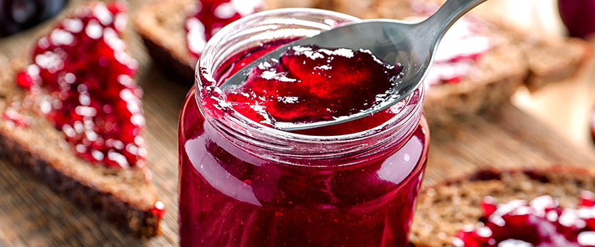

Las Mermeladas Carbajal son una deliciosa opción para disfrutar de sabores naturales y auténticos. Elaboradas con frutas seleccionadas y un toque especial, nuestras mermeladas son ideales para untar en pan, acompañar postres o realzar el sabor de tus recetas favoritas. Su equilibrio perfecto entre dulzura y frescura las convierte en una experiencia única.

Nombre: Conservas Carbajal
Dirección: Calle#16 de septiembre, Municipio de Amanalco
Teléfono: 55-64-20-65-92
Email: contacto@gaelbartolo444.com.mx
| Producto | Presentación | Precio |
|---|---|---|
| Mermelada de Fresa | 250 g | $50.00 |
| Mermelada de Durazno | 250 g | $45.00 |
| Mermelada de Mango | 250 g | $55.00 |